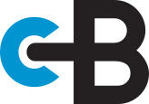

Online configureren, gecontroleerd door een casebouwer, gebouwd in onze eigen werkplaats in Doesburg.
 600 × 400 × 400 mm · op maat
600 × 400 × 400 mm · op maat
Je hoeft niet te weten hoe een flightcase heet om er een te bestellen.
Model en maten zijn bekend. Direct de configurator in, prijs meteen in beeld, klaar in vijf stappen.
Een Les Paul, een 19-inch rack van 6 HE, een moving head. Zeg wat erin gaat, wij bepalen de maten.
Koffer, hoedcase, trunccase of rackcase — wat is het verschil, en wat past bij jouw transport?
“Wij bestellen per seizoen zeventig kisten. Dat het bedrag er meteen staat, scheelt ons een week heen-en-weer per bestelling.”
// citaat nog op te halen · plaatsvervangende tekst 14 toepassingen
14 toepassingenMachineonderdelen, prototypes en behuizing voor mobiele opstellingen. Seriematig, met een tekening vooraf.
Bekijk branche → 22 toepassingen
22 toepassingenDe markt waar we mee begonnen zijn. Cases die tien keer per jaar de vrachtwagen in en uit gaan, vijf jaar lang.
Bekijk branche → 7 toepassingen
7 toepassingenTransport dat aan specificatie moet voldoen en dat aantoonbaar moet zijn. Materiaal, documentatie en keuring liggen vooraf vast.
Bekijk branche → 11 toepassingen
11 toepassingenMeetinstrumenten die het veld in gaan. Het schuiminterieur is hier het product — gefreesd op het instrument, niet op de kist.
Bekijk branche → 9 toepassingen
9 toepassingenCamera's, optiek en regieapparatuur die dagelijks op locatie staan. Snel open, snel dicht, en altijd compleet.
Bekijk branche → 5 toepassingen
5 toepassingenEenmalig, onvervangbaar en zelden rechthoekig — altijd volledig maatwerk.
Bekijk branche →Je wacht niet op een prijs en niet op een terugbelverzoek. En vóór je bestelt kijkt er altijd nog een casebouwer mee — gratis, want een case die niet past kost ons allebei tijd.
Laat je maten controleren →Wat je in de configurator ziet, is de prijs. Geen aanvraagformulier, geen terugbelverzoek, geen drie werkdagen stilte.
Start met configureren →Wij bouwen voor verhuurbedrijven met zeventig kisten per seizoen, en voor de gitarist met één Les Paul. Dezelfde fabriek, dezelfde tolerantie.
Geen maten bij de hand? Een schets, een datasheet of een foto van je apparatuur is genoeg. Je krijgt dezelfde werkdag een tekening met prijs terug.

Profielen, hoeken, sluitingen, wielen en schuim — hetzelfde materiaal waarmee wij bouwen. Vandaag besteld, morgen verstuurd.
Alle onderdelen op maat gezaagd en geteld, plus de handleiding. Je schroeft hem zelf in elkaar.
Alleen plaatmateriaal op maat, zonder case. Geef je maten door, wij zagen.
Typ het in de zoekbalk bovenaan en bestel direct, met aantal.
Begin met configureren en zie binnen een minuut wat je case gaat kosten.
Open de configurator →